Real TV, from your own library
Phosphor turns the shows and movies on your Jellyfin server into channels that are always on: a guide to flip through, breaks between shows, promos for what's coming up, and a weather channel. Everything is set up from your computer, and every Roku in the house plays the same thing at the same moment.
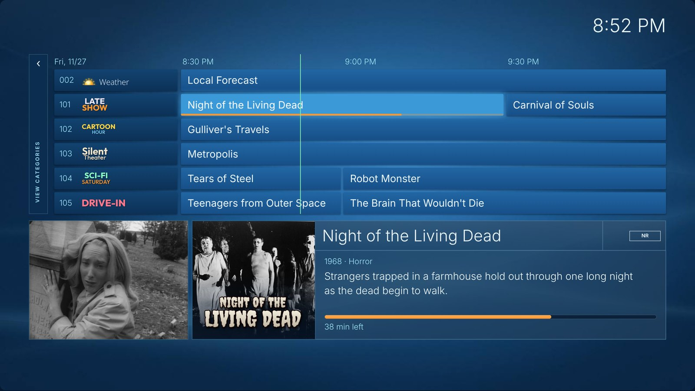
Channel surf like it's 1999
A full program guide with channel logos, a clock, and the channel you're on playing in the corner. Highlight anything to see what it is, how long is left, and its rating.
- Shows are already in progress when you tune in, just like real TV.
- Favorites, categories and reminders for later.
- Posters, art and descriptions come from Jellyfin, or pick your own in the image browser.
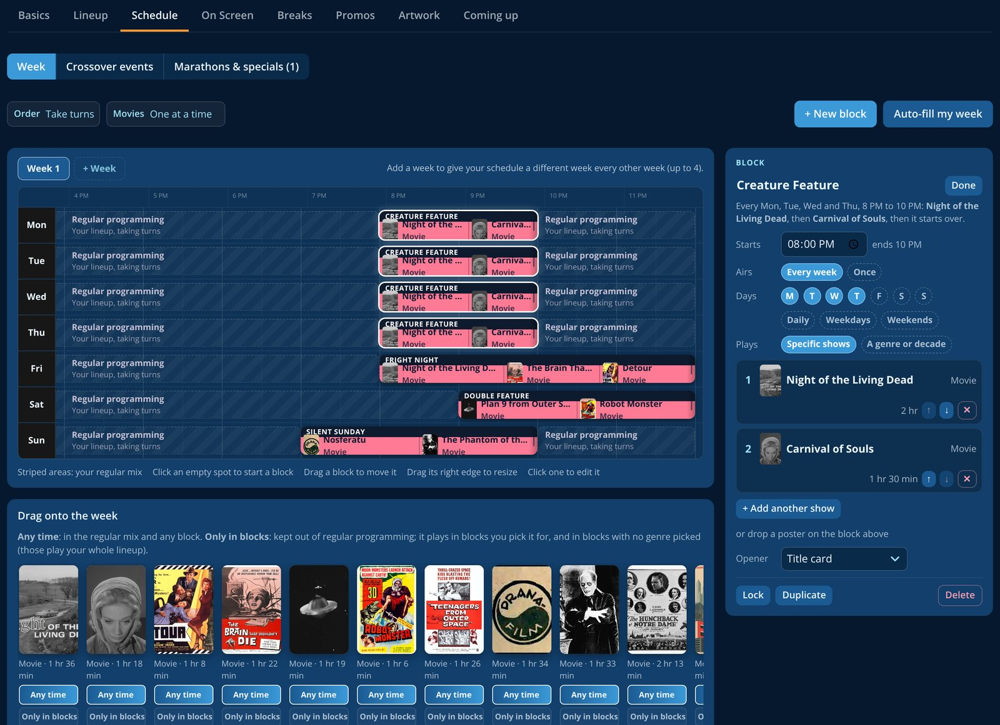
Channels that run themselves
Make a channel from shows, movies, genres or collections, and Phosphor keeps it on the air around the clock.
- Blocks: morning cartoons, afternoon reruns, prime time, a Friday night lineup, Saturday movie night.
- New episodes weekly: each show gets its night, with the occasional rerun.
- Rotation: shows come and go like seasons. When one finishes, the next one takes its spot.
- Marathons and specials: a week of one series, or a holiday night. They cut in on time, like real TV.
- Up to four rotating weeks, so the schedule never feels the same.
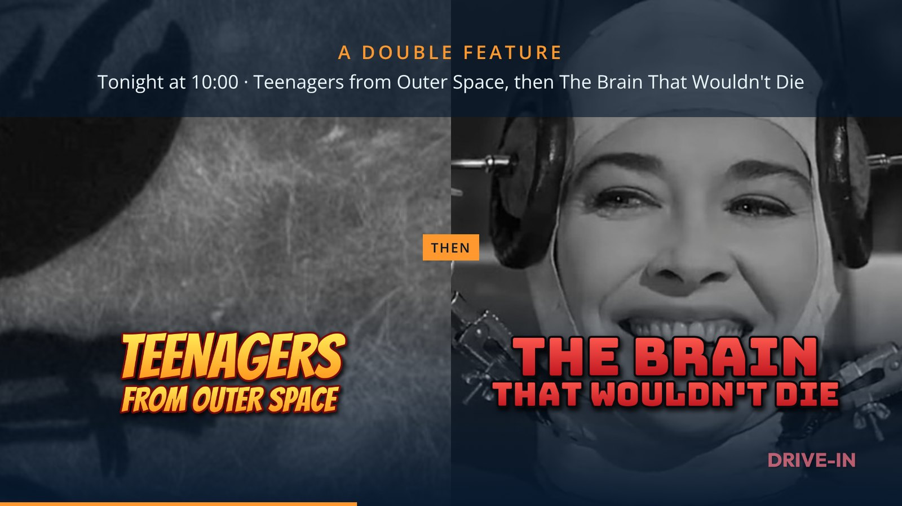
Commercials, bumpers and station IDs
Add your own vintage commercials and Phosphor fills the time between shows, so the next one starts on the half hour.
- Leave it on automatic, or build the break piece by piece: station IDs, bumpers, a "coming up next" card.
- Match commercials to the show's decade.
- Keep 4:3 shows with 4:3 commercials.
- An intro before a block or a movie, and a station ID at the top of the hour.
Promos it makes for you
Each break can carry a short promo made from your own schedule and artwork: what's on tonight, the week ahead, a marathon coming up, or what's on another channel right now. Episode names, premieres and finales are added automatically.
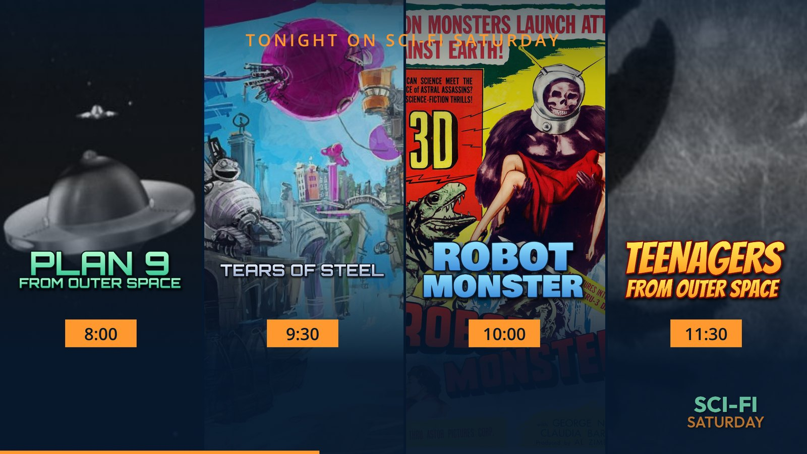
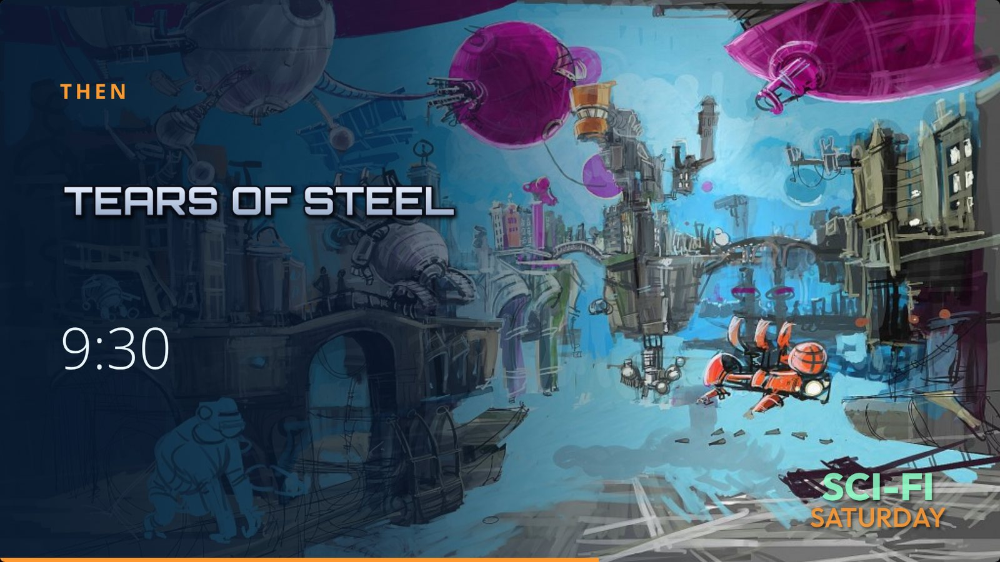
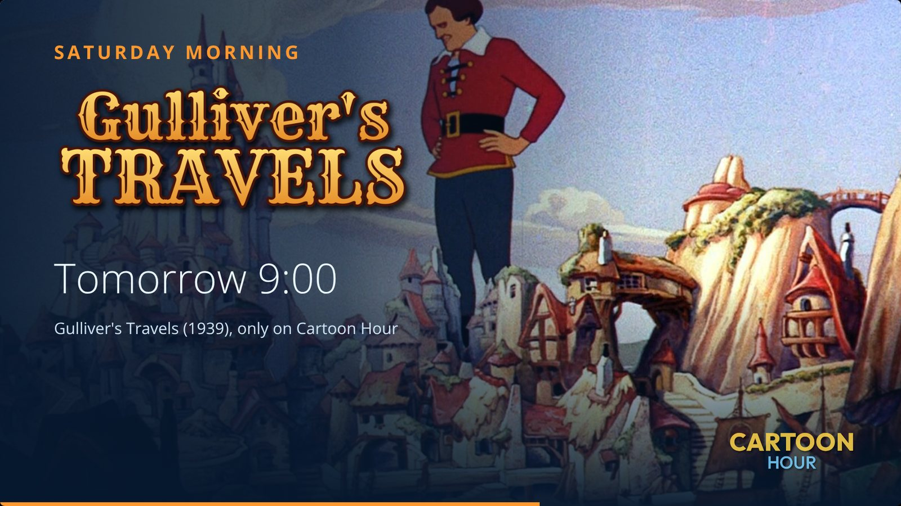
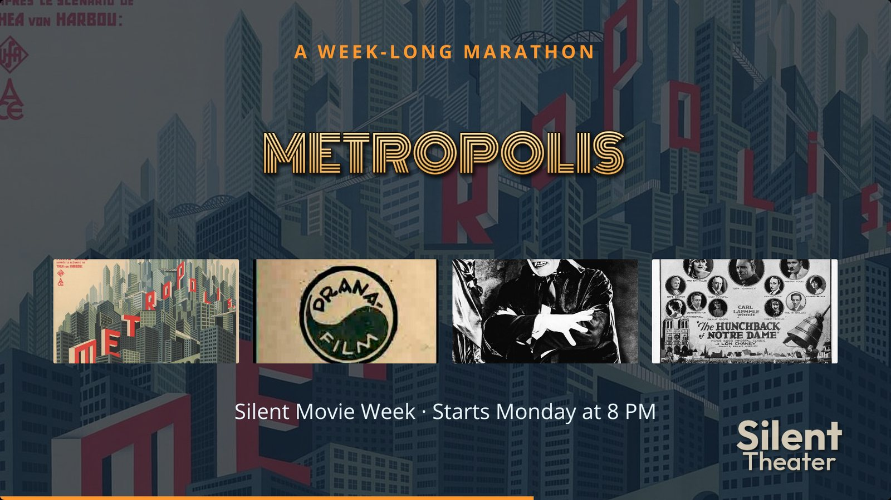
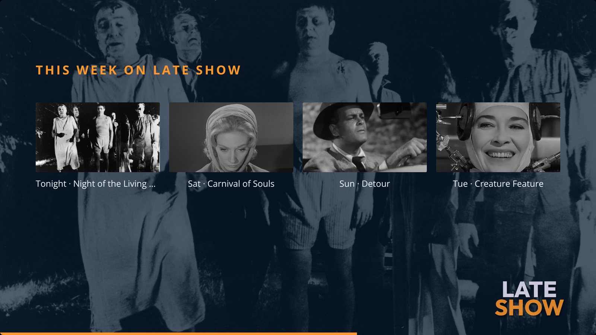
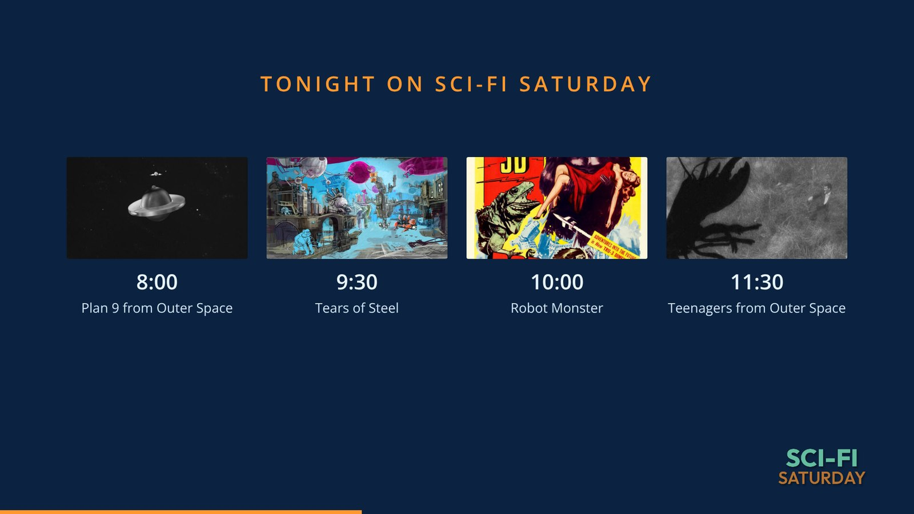
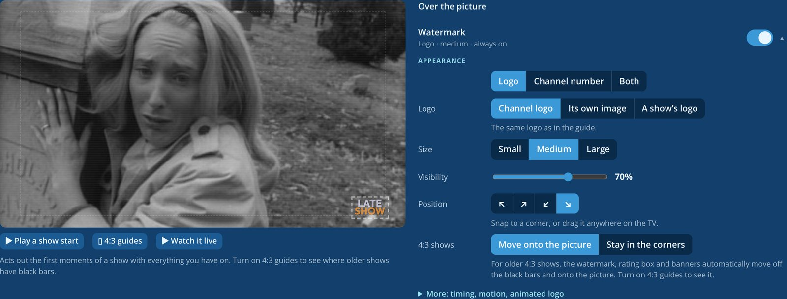
The little touches
Everything that made TV feel like TV, placed where you want it and previewed right on the setup page.
- A channel watermark, with its own logo, size, visibility and motion.
- "Up next" banners before the next show.
- Now · Next · Later strips, tickers and rating boxes.
- A credits squeeze that shows what's coming on.

Your local forecast, on loop
A weather channel with current conditions, tonight and tomorrow, the hourly and 7-day forecast, live radar, sunrise and moon phases, set to music from your library.
Severe weather alerts can interrupt any channel, on every TV. (US only.)

Music stations
Turn your music library into stations that play around the clock, by genre, decade or artist, with full-screen album art and what's playing next.
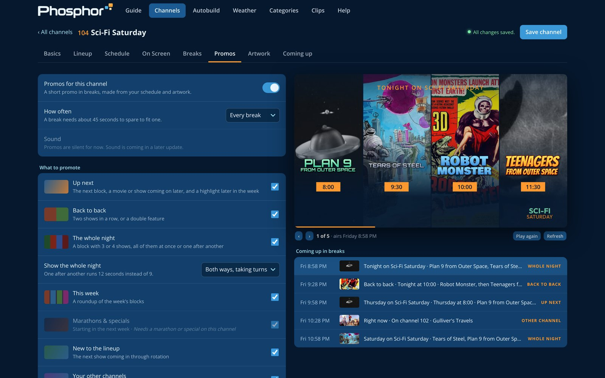
Set it up from your computer
The Phosphor plugin adds a setup page to your Jellyfin server. Every option has a sensible default, and you can see the result before it reaches your TVs.
- Autobuild makes a whole lineup in one click: sitcoms, dramas, cartoons, movies by decade.
- Step-by-step channel setup, with a preview of what will air.
- A live copy of the guide, the weather and every promo, right on the page.
- Back up and restore everything in one file.
Build a channel, step by step
Each channel has its own tabs: what it plays, when, what's in the breaks, what's on screen, its promos and its artwork. Every step has sensible defaults, so you only change what you want.
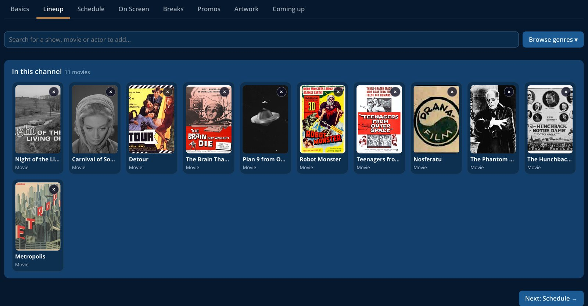
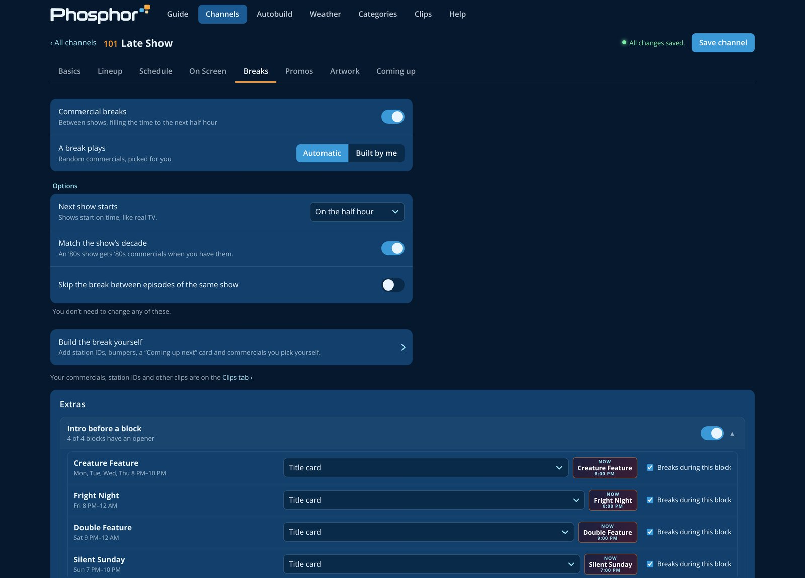
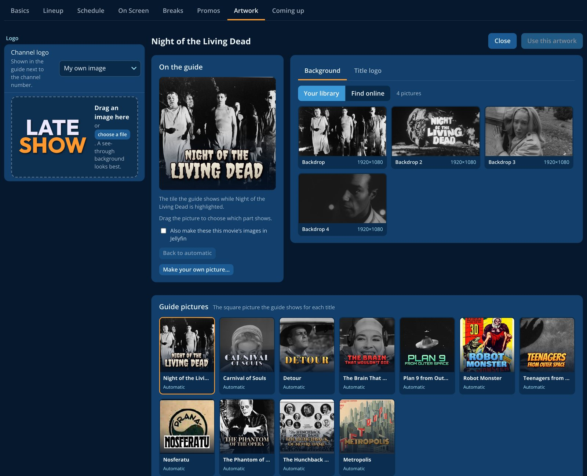
Around the house
Made for the whole family and every TV.
Every TV in sync
All your Rokus play the same channel at the same moment.
Parental controls
Lock channels with a PIN, cap the rating, or keep grown-up shows for late night.
Easy sign-in
Sign in on the TV with a Quick Connect code from your phone.
Your watch history stays yours
What plays on Phosphor never counts as watched in Jellyfin.
The right language
Picks the audio track in your preferred language when a show has one.
Old shows look right
Set each TV for 16:9 or 4:3, and keep older shows in their own shape.
Phosphor doesn't include any shows, movies or music. It plays what's on your own server. The screenshots on this site use public-domain films and art, plus open movies from the Blender Foundation.
Tears of Steel still © Blender Foundation (Michael Williamson), CC BY 3.0, via Wikimedia Commons. All other film images and posters are in the public domain, also from Wikimedia Commons.